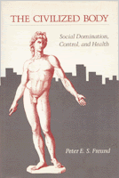

<body bgcolor="#FFFFFF" text="#000000" link="#0000FF" vlink="#CC0000" alink="#CC0000"><center><hr width="350" size="1" align="center" noshade>Investigates studies in the social causation of disease<hr width="350" size="1" align="center" noshade><p><a href="https://cdcshoppingcart.uchicago.edu/Cart/ChicagoBook.aspx?ISBN=9780877222859&&PRESS=temple" target="_top">Buy this book!</a> | <a href="https://cdcshoppingcart.uchicago.edu/Cart/Cart.aspx?PRESS=temple" target="_top">View Cart</a> | <a href="https://cdcshoppingcart.uchicago.edu/Cart/Cart.aspx?PRESS=temple" target="_top">Check Out</a></p><p></p></center><!--none//--><h1>Civilized Body</h1>
<H2>Social Domination, Control, and Health</H2>
<h3>Peter E. S. Freund</h3>
<P>cloth 0-87722-285-1 $24.95, Jan 83, <FONT COLOR=#990033>Out of Print</FONT>
<BR> 166 pp
</P><BLOCKQUOTE><I>"...Should be read by sociologists, psychologists, and those interested in 'holistic heath.' It represents an important addition to libraries at the collegiate and professional school levels."</I>
<br>&#151<b><I>Choice</I></b><I></I></BLOCKQUOTE>
<p>How does a person's bodily health relate to the society in which he lives? This daring essay, in the manner of Ivan Illich or Thomas Szasz, investigates studies in the social causation of disease that range from the pathology of civilization itself to specific occupational hazards. Through an examination of industrial work routines, ecological pollution, everyday stress patterns, racial and class struggles, mobility and economic dysfunctions, temporal and spatial disorientation, anomie and alienation, the author creates a picture of society's destruction of the individual.
<p>How does someone come to believe, for example, that he is worthless, incompetent, not feeling well? Feelings of incompetence or stress are a result of the way work and family life are organized, and of social control in general. Whether for the maintenance of class interests or civilization, social control often involves bodily control, particularly the inhibition of aggression and anger, which can be "sickening," that is, sickness-producing.
<p>The authoritarian family may also precipitate illnesses among resentful and controlled children and help perpetuate relations between the sexes that are characterized by domination and control. "Self-control," which we are taught to value highly, may be simply the internalization of many such social controls.
<p>The author assumes that modern medicine's definitions of illness, its causes, and prescriptions for cure are fraught with problems. Holistic medicine represents a step in the right direction, but has a history of its own, and needs a sociology to complement its individualistic explanations and therapies. Radical political economy as applied to health care, Freund argues, has hit many marks and missed many. Freund also offers a critical examination of the concept of body "de-regulation."
<BR>&nbsp;<H2>About the Author(s)</H2>
<P><b>Peter E. S. Freund</b> teaches Sociology at Montclair State College.</P>
<BR><H2>Subject Categories</H2>
<p><A HREF="/tempress/health.html" TARGET="_top">Health and Health Policy</a>
<BR><A HREF="/tempress/philosophy.html" TARGET="_top">Philosophy and Ethics</a>
<BR><A HREF="/tempress/sociology.html" TARGET="_top">Sociology</a>
</p>
<p align="center"><a href="https://cdcshoppingcart.uchicago.edu/Cart/ChicagoBook.aspx?ISBN=9780877222859&&PRESS=temple" target="_top">Buy this book!</a> | <a href="https://cdcshoppingcart.uchicago.edu/Cart/Cart.aspx?PRESS=temple" target="_top">View Cart</a> | <a href="https://cdcshoppingcart.uchicago.edu/Cart/Cart.aspx?PRESS=temple" target="_top">Check Out</a></p><p><font face="Arial" size="1"><a href="copyright.html" onMouseOver="window.status='Web Copyright Policy';return true;" onMouseOut="window.status=''" title="Web Copyright Policy">&copy;</a> 2015 <a href="http://www.temple.edu" target="new" onMouseOver="window.status='Link to Temple University home page';return true;" onMouseOut="window.status=''" title="Link to Temple University home page">Temple University</a>. All Rights Reserved. http://www.temple.edu/tempress/titles/287_reg.html</font></p>